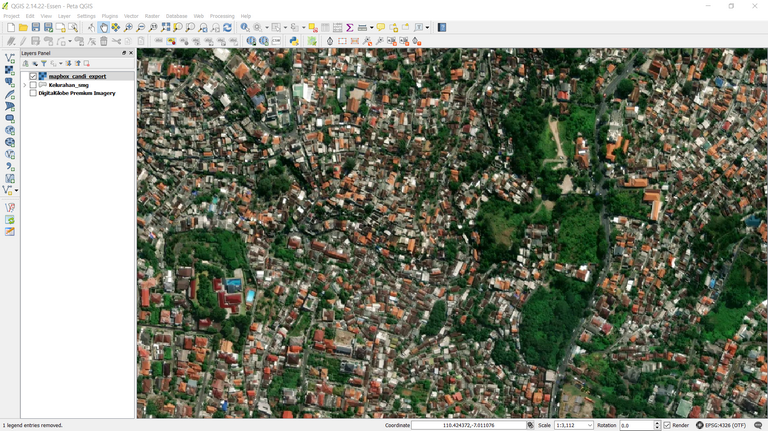
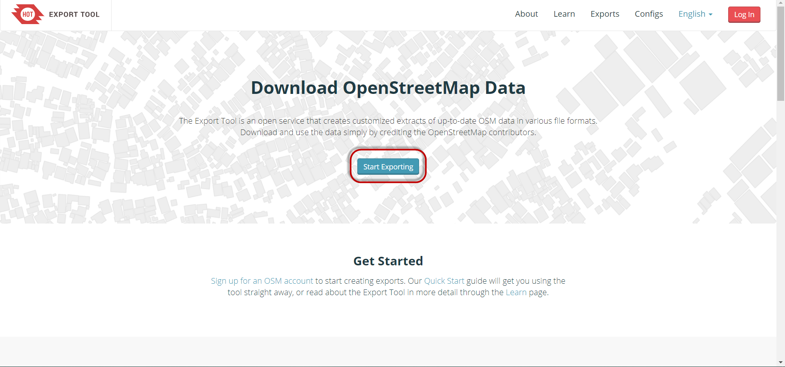
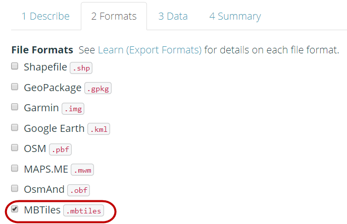
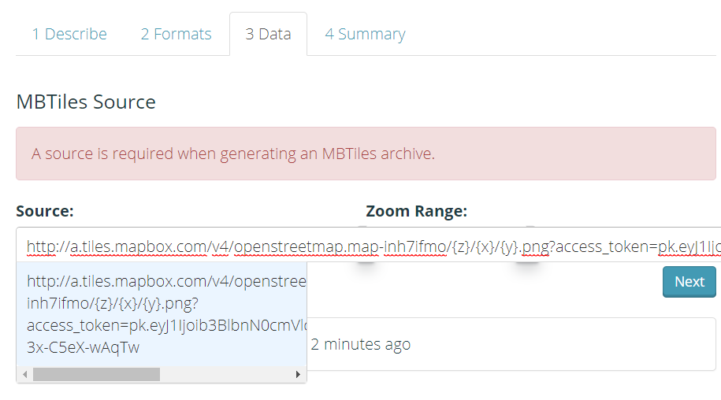
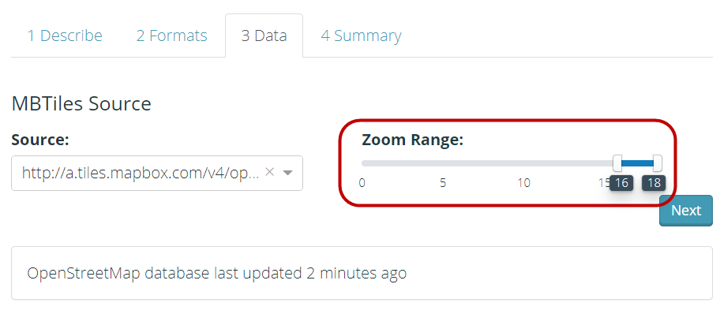
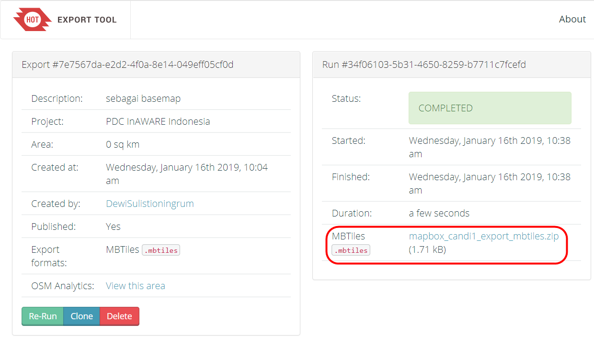
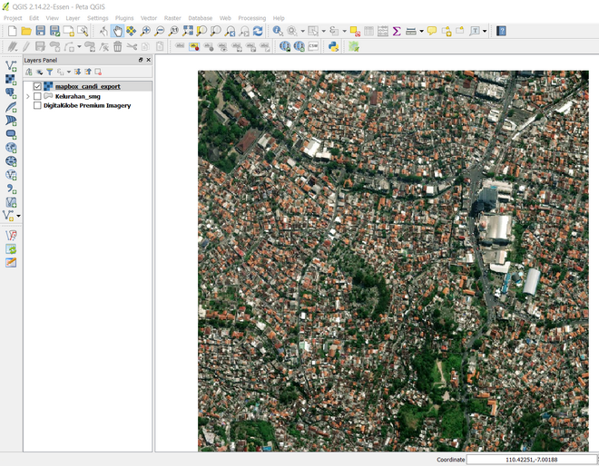

2.7 Créer des MBTiles pour ODK Collect
Objectifs du cours
Lorsque vous utilisez l’application ODK Collect pour mener des enquêtes sur le terrain, vous éprouvez parfois des difficultés à déterminer les objets dans l’application. Vous pouvez utiliser le fichier MBTiles comme fond de carte, qui est une imagerie satellite, pour faciliter l’identification des objets sur le terrain. À la fin de cette section, vous devriez être en mesure de :
- Comprendre le concept des MBTiles
- Apprendre à créer des MBtiles avec Export Tool
Activités d’apprentissage
La définition des MBTiles
MBTiles est un format de données spatiales permettant de stocker plusieurs tuiles cartographiques qui sont combinées dans un fichier au format raster, de sorte qu’elles ressemblent à des images satellites. Vous pouvez utiliser les MBTiles comme carte de base dans ODK Collect, ce qui permet aux utilisateurs de marquer plus facilement des objets sur le terrain. La carte de base est une carte utilisée comme arrière-plan d’une application. Elle peut se présenter sous la forme d’images satellites et de cartes OSM.

Création des MBTiles avec Export Tool
Export Tool est l’un des sites utilisés pour télécharger gratuitement des données OpenStreetMap en fonction de certaines caractéristiques et régions. Les formats de données spatiales couramment utilisés sont les suivants : Shapefile (.shp), GeoPackage (.gpkg) et MBTiles (.mbtiles). Les étapes pour créer des MBTiles avec Export Tool sont les suivantes :
- Ouvrez votre navigateur Web vers l’url: https://export.hotosm.org/, vous devez d’abord vous connecter à votre compte OpenStreetMap. Si vous n’avez pas de compte vous devez vous rendre à l’adresse suivante https://www.openstreetmap.org pour en créer un. Pour plus d’informations, vous pouvez vous référer à la page « Getting Started with OpenStreetMap » (en anglais)
- Après vous être connecté avec succès, cliquez sur « Start Exploring ». \

- Complétez la boîte de dialogue de gauche en décrivant le projet et sélectionnez la zone souhaitée. La sélection de la zone peut se faire de plusieurs manières à l’aide des outils du panneau de droite. Si vous disposez de limites administratives au format .geojson, vous pouvez utiliser l’option Importer.
| Astuces: |
|---|
| Vous ne devez pas sélectionner une zone trop grande pour la zone MBTiles, car cela entraînerait des échecs au cours du processus. |
- Prochaine étape, cliquer sur le Menu Format → Cochez l’option MBTiles.
!
- Cliquez ensuite sur la section de menu Données, vous devez copier l’adresse URL de la carte de tuiles de l’imagerie satellite qui sera utilisée comme carte de base. Il se peut que vous ne voyiez que OpenStreetMap comme l’une des options de création de MBTiles. Par défaut, Export Tools ne propose qu’OpenStreetMap comme arrière-plan pour vos MBTiles.
| 💡 Le saviez-vous?💡 |
|---|
| Vous pouvez facilement ajouter d’autres liens d’imagerie satellite. Pour ajouter un lien ci-dessous, sélectionnez l’une des images satellites disponibles, copiez le lien ci-dessous et collez-le dans la boîte Source MBTiles du menu Données. |
- Après avoir collé le lien, vous pouvez glisser vers la gauche et sélectionner le lien que vous avez saisi.

- Vous pouvez modifier le paramètre Zoom afin de sélectionner le niveau de zoom pour l’affichage des MBTiles. Nous devons garder à l’esprit que si la distance entre la plage de zoom s’éloigne, la taille du fichier sera encore plus importante.

- La dernière étape consiste à sélectionner le menu « Summary», cette section affichera le résumé de votre projet. Si votre projet veut être vu par d’autres utilisateurs, vous pouvez choisir « Publish » cette exportation. Cliquez ensuite sur Create Export pour procéder à la création des MBTiles.

-
Le processus de création des MBTiles prendra plusieurs minutes en fonction du réseau internet, de la taille de la zone et de la plage de zoom qui a été définie précédemment. Vous n’avez pas besoin d’attendre, car l’outil d’exportation vous avertit par courrier électronique lorsque le processus est terminé. Vous pouvez également voir d’autres projets qui ont été créés dans le « Export Menu ».
-
Une fois le processus terminé, le statut du projet doit passer à « COMPLETED ». Cliquez sur le nom du fichier en bleu pour télécharger directement le fichier .mbtiles..

- MBTiles peut être ouvert à l’aide d’un logiciel de cartographie tel que QGIS, de sorte qu’il affiche l’imagerie satellite hors ligne. Ce moyen peut être utilisé pour vérifier d’abord le fichier .mbtiles avant de l’insérer dans l’application ODK Collect, ouvrir QGIS → Ajouter une couche Raster.

[Quiz] Testez vos connaissances
- Quel est le format de données spatiales permettant de stocker plusieurs tuiles cartographiques qui sont combinées en un seul fichier au format matriciel ?
a. MBTiles
b.QTiles
c.RasterTiles
d.Geopackage
- Vous pouvez créer des MBTiles pour votre zone préférée à l’aide de « Export tool » en définissant l’URL de l’imagerie satellite dans le champ source MBTiles
a.Vrai
b.Faux
- Le processus de création des MBTiles prend plusieurs minutes en fonction de la taille de la zone et de la plage de zoom qui a été définie précédemment.
a.Vrai
b.Faux
Answer: 1.A | 2.A |3. A
Liste de contrôle des activités
À la fin de cette section, vous devriez être en mesure de :
- Comprendre la définition des MBTiles
- Créer des MBTiles à l’aide de « Export tool »
Ressources complémentaires
- Créer des MBTiles avec QGIS: https://www.fulcrumapp.com/blog/mbtiles-from-qgis/